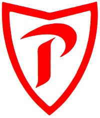
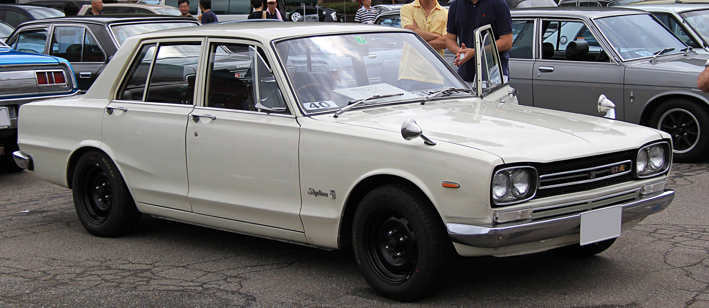
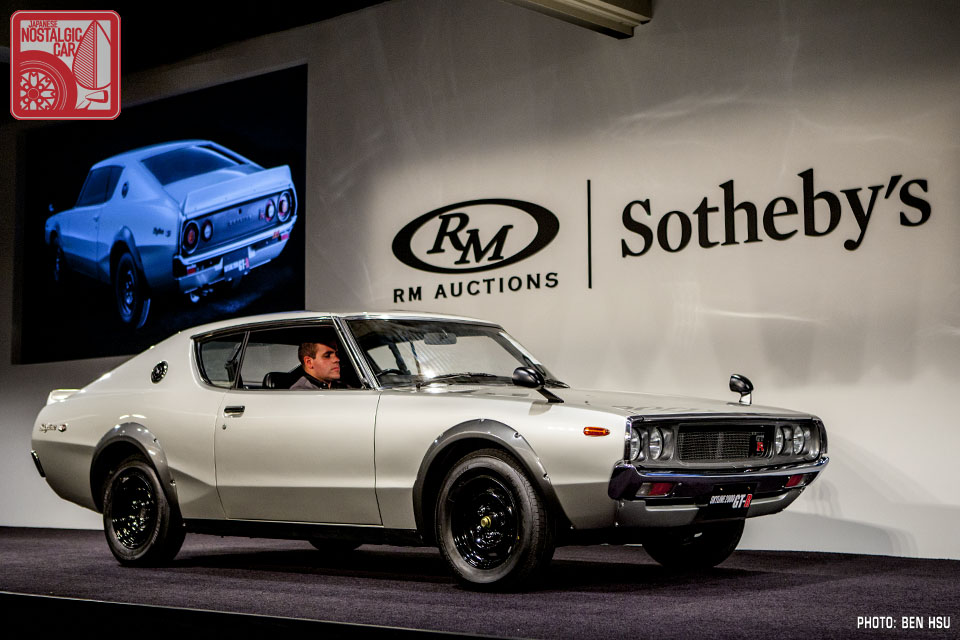
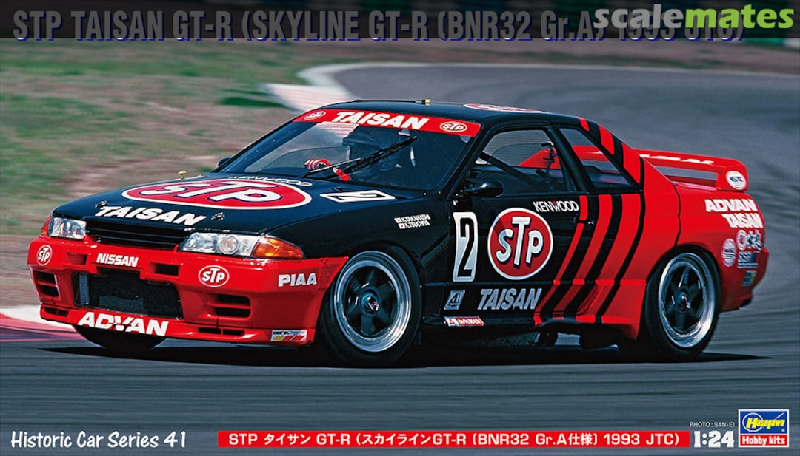
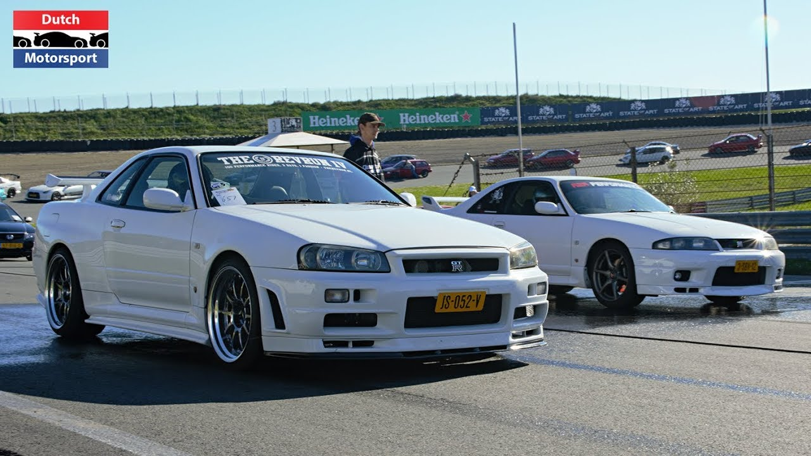

prince motor company en Nissan

De Nissan skyline gaat al helemaal terug tot in de jaren vjftig.De skyline werdt eerst geproduceerd door prince motor company
als een luxe personen auto totdat in 1967 Nissan en prince motor company samen een werden. Samen verkochten ze de skyline en de nissan gloria in hun dealers onder de naam Nissan prince shop.
De Hakosuka
De Nissan skyline werdt ontworpen door Shinichiro Sakurai. Hij ontwierp een sedan
versie en een coupé versie. Die werd de 2000GT genoemd of als modelnaam c10, die gaven ze een 2.0 liter motor met 127pk.
Nissan had toendertijd al een succesvolle roadster de FairladyZ [Datsun 240Z], maar Nissan zocht nog een snelle sedan. De skyline was een perfecte kandidaat ervoor. Nissan onthulde de skyline 2000GT-R als een 4-deur sedan in 1968, die produceerde ze maar voor twee jaar.
in 1970 onthulde ze de coupé versie va 2000GT-R en kwam op de markt in 1971. De C10 kreeg als bijnaam 'Hakosuka' wat uit het japans vertaalt wordt als hoekige skyline. De Hakosuka werdt van 1969-1971 gebruikt als touring car en in de drie jaar dat er mee werdt geracet
heeft 52 overwinningen gehaald waarvan het er 49 achterelkaar heeft gewonnen. De hakosuka moest 't opnemen tegen de beste auto's van europa en japan maar toch won hij alles.
De Kenmeri
In 1972 begon de productie van de opvolger van de hakosuka de 'kenmeri'of C110. Nissan kon er maar 197
maken voordat de productie stilgelgd moest worden voor 1973. De rede waaromm de productie gestopt moest worden was omdat de oiecrisis begon en dat motorsport een verspilling was van benzine.
Godzilla
In 1989 introduceerde Nissan de Nissan skyline GT-R32 met all-wheel-drive, HICAS en de traditionele GT-R motor 2.6 liter DOHC[Dual Over Head Camshafts] en 2 turbo's, oftewel afgekort de RB26DETT. De R32 is de eerste nissan die de RB26DETT kreeg en hem zo legendaries maakte.
De R32 was in alle opzichte beter dan de hakosuka en kenmeri en kon in 6,0 seconden de 100 km/h bereiken en in race getuned 5,5 seconden.
De R32 versloeg zelfs het record van de supersnelle porsche 944 op de nordschleife van de nurburgring met wel 25 seconden en zette daarmee het nieuwe wereld record rond de nordschleife.
De reden waarom de R32 Godzilla wordt genoemt komt door het geluid dat de RB26 maakt. Het geluid komt zo overeen met het geluid van godzilla dat ze de R32 gewoon godzila moesten noemen, klik hier voor een sound check.
De 90's
De jaren 90 was een goed decenniavoor nissan de GT-R33 en GT-R34
kwamen op de markt en verbaasde iedereen ermee met de performance die de auto's leverden.
De skyline's waren alleen maar verbeterignen van elkaars voorgangers en steeds meer afgepolijst, maar ze konden niet toppen aan de dominante race performance van de R32.
Ook al verbeterde de de R33 de tijd van de R32 op de nurburgring door in de 8 minuten gebied te komen, was het nog niet genoeg om de R32 te toppen qua racen.
De R34 was zoals te verwachten een verbetering van de R33 met allerei verbetringen aan het HICAS systeem en de vierwielaandrijving systeem.